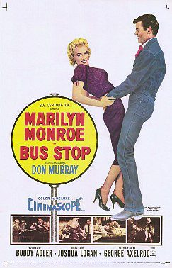

Bus Stop
Starring: Marilyn Monroe, Don Murray, Arthur O'Connell
Director: Joshua Logan
Writer: William Inge, George Axelrod
Producer: Buddy Adler
Bus Stop is a 1956 American romantic comedy-drama directed by Joshua Logan, adapted by George Axelrod from the 1955 play by William Inge. It stars Marilyn Monroe, Don Murray, Arthur O'Connell, Betty Field, Eileen Heckart, Robert Bray, and Hope Lange.
Trivia
- Selected for the National Board of Review: Top Ten Films.
- Also nominated for: Academy Award for Best Supporting Actor.
- Bus Stop is based on William Inge's play of the same name (which in turn was expanded from an earlier, one-act play titled People in the Wind).
- The inspiration for the play came from people Inge met in Tonganoxie, Kansas.
- The original production opened at the Music Box Theatre on Broadway in March 1955, with Kim Stanley as Chérie and Albert Salmi as Bo. Bus Stop was the first film that Marilyn Monroe chose to make under a new contract.
Filming Locations
- Arizona
- Filming took place in Sun Valley, Idaho, and Phoenix, Arizona, in early 1956, with Monroe "technically in charge" as the head of MMP (Marilyn Monroe Productions, her film production company), occasionally making decisions on cinematography and with Logan adapting to her chronic tardiness and perfectionism.
Previous Showings
4 Runs • 3 Festivals
Original Billings: 1 run (September 12, 1956)
Original Run: September 12, 1956 (Wednesday - Tuesday)
All runs on record (4):
- September 12, 1956 (Wednesday - Tuesday)Marilyn Monroe, Don Murray
- August 9 - 10, 2001Summer 2001w/ The Seven Year Itch
- June 6 - 7, 2013The 1950sw/ Some Came Running
- September 4 - 6, 2026Summer 2026 including the Films of Marilyn Monroew/ Picnic